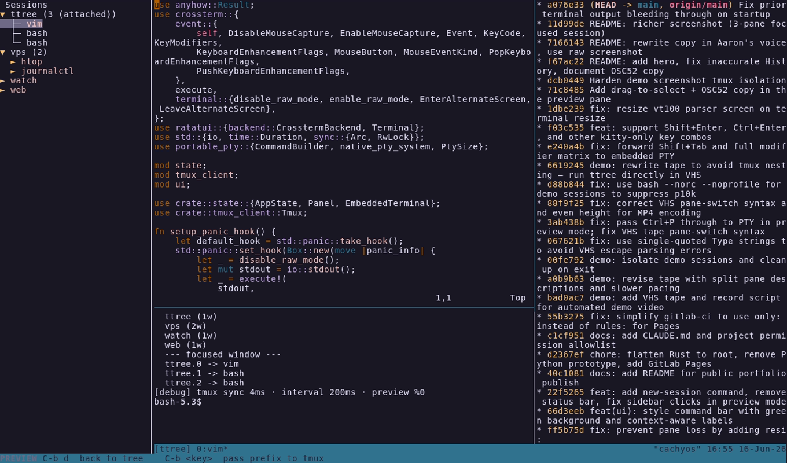

A terminal UI for managing tmux sessions — tree navigation, live pane preview, and full mouse support.
cargo install --git https://gitlab.com/tek.cat/ttree

Browse sessions → windows → panes in a collapsible sidebar. Smart collapsing hides the hierarchy for simple sessions.
Embedded PTY renders the active pane in real time. Click any session in the sidebar to switch — without leaving preview mode.
Click to select, scroll to navigate, drag the divider to resize the sidebar, and pass mouse events through to the embedded terminal.
Selection, expanded nodes, and sidebar width are saved to disk and restored on next launch.
j/k/h/l for navigation, plus new session, rename, attach, and help.
Tree state syncs with tmux every 200 ms — new panes and closed sessions appear automatically.
| j / ↓ | Move selection down |
| k / ↑ | Move selection up |
| h / ← | Collapse node / jump to parent |
| l / → | Expand node / jump to first child |
| Space | Toggle expand/collapse |
| Enter | Open live preview panel |
| a | Attach to selected session / window / pane |
| n | Create new session |
| r | Rename selected session |
| Ctrl+P | Toggle focus between tree and preview |
| ? | Help overlay |
| q | Quit |
| Ctrl+B d | (Preview mode) Return to tree |
| Ctrl+B … | (Preview mode) Pass prefix key to tmux |